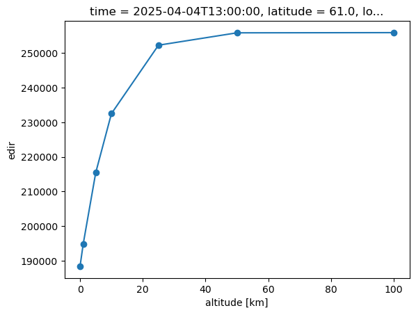
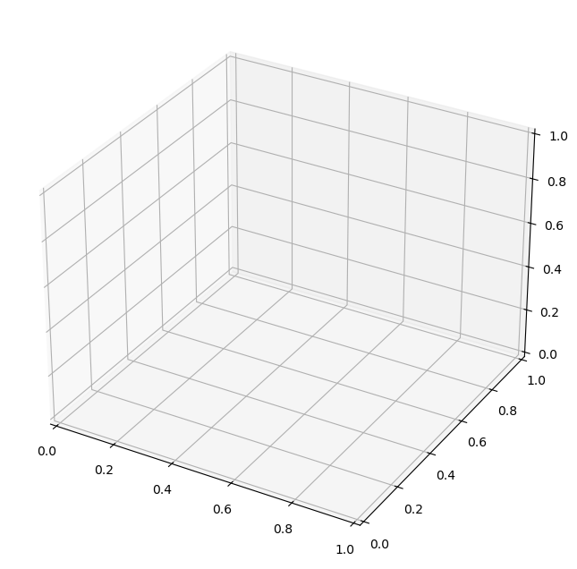

PyRadtran Quickstart#
Basic usage example demonstrating spectral radiative transfer simulations with xarray integration.
# Import PyRadtran components using NEW IO system
from pyradtran.interface import PyRadtranAccessor # This should register the accessor automatically
import matplotlib.pyplot as plt
import numpy as np
import xarray as xr
from pathlib import Path
import pandas as pd
# Load the configuration from the YAML file
config_path = Path('../config/spectral_config.yaml')
import logging
# change to "DEBUG" if you want to see more output
logging.getLogger('pyradtran').setLevel(logging.DEBUG)
N_timesteps = 10
# stationary simulation at constant altitude, latitude, and longitude but with varying time
ds = xr.Dataset(
coords={
'time' : pd.date_range('2025-04-04T08:00:00', periods=N_timesteps, freq='h'),
'latitude' : ('time', [61.0] * N_timesteps),
'longitude' : ('time', [22.0] * N_timesteps),
'altitude' : ('altitude', [0, 1, 5, 10, 25, 50, 100]),
}
)
# Run a spectral simulation for a single point using NEW IO system
ds_sim = ds.pyradtran.run_uvspec(
config_path=config_path,
return_dataset=True,
save_to_file=True,
)
print("\nSimulation complete with NEW IO system!")
print(f"Dataset variables: {list(ds_sim.data_vars.keys())}")
print(f"Dataset coordinates: {list(ds_sim.coords.keys())}")
print(f"Dataset shape: {ds_sim.dims}")
2025-07-22 02:11:34,035 - pyradtran.interface - INFO - Altitude found as coordinate - using 7 levels for zout: [ 0 1 5 10 25 50 100]
2025-07-22 02:11:34,037 - pyradtran.interface - INFO - Auto-generating output path: work/xarray_example_20250722_021134.nc
2025-07-22 02:11:34,045 - pyradtran.interface - INFO - Running 10 simulations across time/location points...
2025-07-22 02:11:34,189 - pyradtran.core - DEBUG - Generated input file: /projekt_agmwend/home_rad/Joshua/HALO-AC3_Arctic_leads/sim/pyradtran/book/notebooks/work/uvspec_20250404_080000_zwjw2v58.inp
2025-07-22 02:11:34,192 - pyradtran.core - DEBUG - Running uvspec: /opt/libradtran/2.0.4/bin/uvspec < uvspec_20250404_080000_zwjw2v58.inp > uvspec_20250404_080000_zwjw2v58.out
2025-07-22 02:11:36,515 - pyradtran.core - DEBUG - uvspec finished successfully for uvspec_20250404_080000_zwjw2v58.inp.
2025-07-22 02:11:36,518 - pyradtran.io - DEBUG - Initialized parser with columns: ['zout', 'lambda', 'sza', 'edir', 'eglo', 'edn', 'eup', 'enet', 'albedo']
2025-07-22 02:11:36,520 - pyradtran.io - DEBUG - Original user columns: ['zout', 'lambda', 'sza', 'edir', 'eglo', 'edn', 'eup', 'enet', 'albedo']
2025-07-22 02:11:36,528 - pyradtran.io - INFO - Detected output type: spectral_multi_altitude
2025-07-22 02:11:36,547 - pyradtran.interface - DEBUG - Successfully processed simulation 1/10 for time 2025-04-04T08:00:00.000000000
2025-07-22 02:11:36,547 - pyradtran.core - DEBUG - Generated input file: /projekt_agmwend/home_rad/Joshua/HALO-AC3_Arctic_leads/sim/pyradtran/book/notebooks/work/uvspec_20250404_090000_xy_hkoon.inp
2025-07-22 02:11:36,548 - pyradtran.core - DEBUG - Running uvspec: /opt/libradtran/2.0.4/bin/uvspec < uvspec_20250404_090000_xy_hkoon.inp > uvspec_20250404_090000_xy_hkoon.out
2025-07-22 02:11:38,870 - pyradtran.core - DEBUG - uvspec finished successfully for uvspec_20250404_090000_xy_hkoon.inp.
2025-07-22 02:11:38,872 - pyradtran.io - DEBUG - Initialized parser with columns: ['zout', 'lambda', 'sza', 'edir', 'eglo', 'edn', 'eup', 'enet', 'albedo']
2025-07-22 02:11:38,873 - pyradtran.io - DEBUG - Original user columns: ['zout', 'lambda', 'sza', 'edir', 'eglo', 'edn', 'eup', 'enet', 'albedo']
2025-07-22 02:11:38,879 - pyradtran.io - INFO - Detected output type: spectral_multi_altitude
2025-07-22 02:11:38,893 - pyradtran.core - DEBUG - Generated input file: /projekt_agmwend/home_rad/Joshua/HALO-AC3_Arctic_leads/sim/pyradtran/book/notebooks/work/uvspec_20250404_100000_2pix_hx8.inp
2025-07-22 02:11:38,894 - pyradtran.interface - DEBUG - Successfully processed simulation 2/10 for time 2025-04-04T09:00:00.000000000
2025-07-22 02:11:38,894 - pyradtran.core - DEBUG - Running uvspec: /opt/libradtran/2.0.4/bin/uvspec < uvspec_20250404_100000_2pix_hx8.inp > uvspec_20250404_100000_2pix_hx8.out
2025-07-22 02:11:41,178 - pyradtran.core - DEBUG - uvspec finished successfully for uvspec_20250404_100000_2pix_hx8.inp.
2025-07-22 02:11:41,180 - pyradtran.io - DEBUG - Initialized parser with columns: ['zout', 'lambda', 'sza', 'edir', 'eglo', 'edn', 'eup', 'enet', 'albedo']
2025-07-22 02:11:41,181 - pyradtran.io - DEBUG - Original user columns: ['zout', 'lambda', 'sza', 'edir', 'eglo', 'edn', 'eup', 'enet', 'albedo']
2025-07-22 02:11:41,189 - pyradtran.io - INFO - Detected output type: spectral_multi_altitude
2025-07-22 02:11:41,210 - pyradtran.interface - DEBUG - Successfully processed simulation 3/10 for time 2025-04-04T10:00:00.000000000
2025-07-22 02:11:41,209 - pyradtran.core - DEBUG - Generated input file: /projekt_agmwend/home_rad/Joshua/HALO-AC3_Arctic_leads/sim/pyradtran/book/notebooks/work/uvspec_20250404_110000_ygr7xbzo.inp
2025-07-22 02:11:41,211 - pyradtran.core - DEBUG - Running uvspec: /opt/libradtran/2.0.4/bin/uvspec < uvspec_20250404_110000_ygr7xbzo.inp > uvspec_20250404_110000_ygr7xbzo.out
2025-07-22 02:11:43,534 - pyradtran.core - DEBUG - uvspec finished successfully for uvspec_20250404_110000_ygr7xbzo.inp.
2025-07-22 02:11:43,536 - pyradtran.io - DEBUG - Initialized parser with columns: ['zout', 'lambda', 'sza', 'edir', 'eglo', 'edn', 'eup', 'enet', 'albedo']
2025-07-22 02:11:43,537 - pyradtran.io - DEBUG - Original user columns: ['zout', 'lambda', 'sza', 'edir', 'eglo', 'edn', 'eup', 'enet', 'albedo']
2025-07-22 02:11:43,544 - pyradtran.io - INFO - Detected output type: spectral_multi_altitude
2025-07-22 02:11:43,562 - pyradtran.interface - DEBUG - Successfully processed simulation 4/10 for time 2025-04-04T11:00:00.000000000
2025-07-22 02:11:43,561 - pyradtran.core - DEBUG - Generated input file: /projekt_agmwend/home_rad/Joshua/HALO-AC3_Arctic_leads/sim/pyradtran/book/notebooks/work/uvspec_20250404_120000_ssoqlq6l.inp
2025-07-22 02:11:43,563 - pyradtran.core - DEBUG - Running uvspec: /opt/libradtran/2.0.4/bin/uvspec < uvspec_20250404_120000_ssoqlq6l.inp > uvspec_20250404_120000_ssoqlq6l.out
2025-07-22 02:11:45,835 - pyradtran.core - DEBUG - uvspec finished successfully for uvspec_20250404_120000_ssoqlq6l.inp.
2025-07-22 02:11:45,838 - pyradtran.io - DEBUG - Initialized parser with columns: ['zout', 'lambda', 'sza', 'edir', 'eglo', 'edn', 'eup', 'enet', 'albedo']
2025-07-22 02:11:45,840 - pyradtran.io - DEBUG - Original user columns: ['zout', 'lambda', 'sza', 'edir', 'eglo', 'edn', 'eup', 'enet', 'albedo']
2025-07-22 02:11:45,848 - pyradtran.io - INFO - Detected output type: spectral_multi_altitude
2025-07-22 02:11:45,865 - pyradtran.interface - DEBUG - Successfully processed simulation 5/10 for time 2025-04-04T12:00:00.000000000
2025-07-22 02:11:45,865 - pyradtran.core - DEBUG - Generated input file: /projekt_agmwend/home_rad/Joshua/HALO-AC3_Arctic_leads/sim/pyradtran/book/notebooks/work/uvspec_20250404_130000_t0rp12lj.inp
2025-07-22 02:11:45,867 - pyradtran.core - DEBUG - Running uvspec: /opt/libradtran/2.0.4/bin/uvspec < uvspec_20250404_130000_t0rp12lj.inp > uvspec_20250404_130000_t0rp12lj.out
2025-07-22 02:11:48,389 - pyradtran.core - DEBUG - uvspec finished successfully for uvspec_20250404_130000_t0rp12lj.inp.
2025-07-22 02:11:48,391 - pyradtran.io - DEBUG - Initialized parser with columns: ['zout', 'lambda', 'sza', 'edir', 'eglo', 'edn', 'eup', 'enet', 'albedo']
2025-07-22 02:11:48,392 - pyradtran.io - DEBUG - Original user columns: ['zout', 'lambda', 'sza', 'edir', 'eglo', 'edn', 'eup', 'enet', 'albedo']
2025-07-22 02:11:48,399 - pyradtran.io - INFO - Detected output type: spectral_multi_altitude
2025-07-22 02:11:48,416 - pyradtran.interface - DEBUG - Successfully processed simulation 6/10 for time 2025-04-04T13:00:00.000000000
2025-07-22 02:11:48,415 - pyradtran.core - DEBUG - Generated input file: /projekt_agmwend/home_rad/Joshua/HALO-AC3_Arctic_leads/sim/pyradtran/book/notebooks/work/uvspec_20250404_140000_4m54fjg1.inp
2025-07-22 02:11:48,417 - pyradtran.core - DEBUG - Running uvspec: /opt/libradtran/2.0.4/bin/uvspec < uvspec_20250404_140000_4m54fjg1.inp > uvspec_20250404_140000_4m54fjg1.out
2025-07-22 02:11:50,741 - pyradtran.core - DEBUG - uvspec finished successfully for uvspec_20250404_140000_4m54fjg1.inp.
2025-07-22 02:11:50,743 - pyradtran.io - DEBUG - Initialized parser with columns: ['zout', 'lambda', 'sza', 'edir', 'eglo', 'edn', 'eup', 'enet', 'albedo']
2025-07-22 02:11:50,745 - pyradtran.io - DEBUG - Original user columns: ['zout', 'lambda', 'sza', 'edir', 'eglo', 'edn', 'eup', 'enet', 'albedo']
2025-07-22 02:11:50,752 - pyradtran.io - INFO - Detected output type: spectral_multi_altitude
2025-07-22 02:11:50,769 - pyradtran.interface - DEBUG - Successfully processed simulation 7/10 for time 2025-04-04T14:00:00.000000000
2025-07-22 02:11:50,769 - pyradtran.core - DEBUG - Generated input file: /projekt_agmwend/home_rad/Joshua/HALO-AC3_Arctic_leads/sim/pyradtran/book/notebooks/work/uvspec_20250404_150000_ngd6aiie.inp
2025-07-22 02:11:50,771 - pyradtran.core - DEBUG - Running uvspec: /opt/libradtran/2.0.4/bin/uvspec < uvspec_20250404_150000_ngd6aiie.inp > uvspec_20250404_150000_ngd6aiie.out
2025-07-22 02:11:53,003 - pyradtran.core - DEBUG - uvspec finished successfully for uvspec_20250404_150000_ngd6aiie.inp.
2025-07-22 02:11:53,005 - pyradtran.io - DEBUG - Initialized parser with columns: ['zout', 'lambda', 'sza', 'edir', 'eglo', 'edn', 'eup', 'enet', 'albedo']
2025-07-22 02:11:53,006 - pyradtran.io - DEBUG - Original user columns: ['zout', 'lambda', 'sza', 'edir', 'eglo', 'edn', 'eup', 'enet', 'albedo']
2025-07-22 02:11:53,013 - pyradtran.io - INFO - Detected output type: spectral_multi_altitude
2025-07-22 02:11:53,030 - pyradtran.interface - DEBUG - Successfully processed simulation 8/10 for time 2025-04-04T15:00:00.000000000
2025-07-22 02:11:53,030 - pyradtran.core - DEBUG - Generated input file: /projekt_agmwend/home_rad/Joshua/HALO-AC3_Arctic_leads/sim/pyradtran/book/notebooks/work/uvspec_20250404_160000_wdyuqrqp.inp
2025-07-22 02:11:53,032 - pyradtran.core - DEBUG - Running uvspec: /opt/libradtran/2.0.4/bin/uvspec < uvspec_20250404_160000_wdyuqrqp.inp > uvspec_20250404_160000_wdyuqrqp.out
2025-07-22 02:11:55,306 - pyradtran.core - DEBUG - uvspec finished successfully for uvspec_20250404_160000_wdyuqrqp.inp.
2025-07-22 02:11:55,308 - pyradtran.io - DEBUG - Initialized parser with columns: ['zout', 'lambda', 'sza', 'edir', 'eglo', 'edn', 'eup', 'enet', 'albedo']
2025-07-22 02:11:55,309 - pyradtran.io - DEBUG - Original user columns: ['zout', 'lambda', 'sza', 'edir', 'eglo', 'edn', 'eup', 'enet', 'albedo']
2025-07-22 02:11:55,316 - pyradtran.io - INFO - Detected output type: spectral_multi_altitude
2025-07-22 02:11:55,335 - pyradtran.interface - DEBUG - Successfully processed simulation 9/10 for time 2025-04-04T16:00:00.000000000
2025-07-22 02:11:55,334 - pyradtran.core - DEBUG - Generated input file: /projekt_agmwend/home_rad/Joshua/HALO-AC3_Arctic_leads/sim/pyradtran/book/notebooks/work/uvspec_20250404_170000_laeem38p.inp
2025-07-22 02:11:55,336 - pyradtran.core - DEBUG - Running uvspec: /opt/libradtran/2.0.4/bin/uvspec < uvspec_20250404_170000_laeem38p.inp > uvspec_20250404_170000_laeem38p.out
2025-07-22 02:11:57,659 - pyradtran.core - DEBUG - uvspec finished successfully for uvspec_20250404_170000_laeem38p.inp.
2025-07-22 02:11:57,662 - pyradtran.io - DEBUG - Initialized parser with columns: ['zout', 'lambda', 'sza', 'edir', 'eglo', 'edn', 'eup', 'enet', 'albedo']
2025-07-22 02:11:57,662 - pyradtran.io - DEBUG - Original user columns: ['zout', 'lambda', 'sza', 'edir', 'eglo', 'edn', 'eup', 'enet', 'albedo']
2025-07-22 02:11:57,669 - pyradtran.io - INFO - Detected output type: spectral_multi_altitude
2025-07-22 02:11:57,687 - pyradtran.interface - DEBUG - Successfully processed simulation 10/10 for time 2025-04-04T17:00:00.000000000
2025-07-22 02:11:57,714 - pyradtran.interface - INFO - Successfully completed 10/10 simulations
2025-07-22 02:11:58,128 - pyradtran.interface - INFO - Results saved to work/xarray_example_20250722_021134.nc
Simulation complete with NEW IO system!
Dataset variables: ['sza', 'edir', 'eglo', 'edn', 'eup', 'enet', 'albedo']
Dataset coordinates: ['time', 'latitude', 'longitude', 'wavelength', 'altitude']
Dataset shape: FrozenMappingWarningOnValuesAccess({'time': 10, 'wavelength': 301, 'altitude': 7})
ds_sim.isel(time=5).integrate('wavelength').edir.plot(marker='o', label='Edir')
[<matplotlib.lines.Line2D at 0x7faca15776b0>]

Results#
Visualization of spectral direct irradiance across wavelength and time dimensions.
from matplotlib import cm
# make a 3d plot with time on the x-axis, wavelength on the y-axis, and irradiance on the z-axis
fig = plt.figure(figsize=(12, 8))
ax = fig.add_subplot(111, projection='3d')
ax.set_prop_cycle(
color=cm.viridis(np.linspace(0, 1, len(ds_sim['wavelength'].values))),
)
x = np.arange(len(ds_sim['time'].values))
y = ds_sim['wavelength'].values
z = ds_sim['edir'].values.T
X, Y = np.meshgrid(x, y)
ax.plot_surface(X, Y, z, cmap=cm.viridis, edgecolor='none', alpha=0.8)
ax.set_xlabel('Hour of day')
ax.set_ylabel('Wavelength (nm)')
ax.set_zlabel('$F_\mathrm{dir}^\downarrow$ ($\mathrm{W m^{-2}}$)')
plt.tight_layout()
plt.title('NEW IO System - Spectral Direct Irradiance vs Time')
<>:20: SyntaxWarning: invalid escape sequence '\m'
<>:20: SyntaxWarning: invalid escape sequence '\m'
/projekt_agmwend/home_rad/Joshua/tmp/ipykernel_3082713/1905278869.py:20: SyntaxWarning: invalid escape sequence '\m'
ax.set_zlabel('$F_\mathrm{dir}^\downarrow$ ($\mathrm{W m^{-2}}$)')
/projekt_agmwend/home_rad/Joshua/tmp/ipykernel_3082713/1905278869.py:20: SyntaxWarning: invalid escape sequence '\m'
ax.set_zlabel('$F_\mathrm{dir}^\downarrow$ ($\mathrm{W m^{-2}}$)')
---------------------------------------------------------------------------
ValueError Traceback (most recent call last)
Cell In[3], line 17
14 z = ds_sim['edir'].values.T
15 X, Y = np.meshgrid(x, y)
---> 17 ax.plot_surface(X, Y, z, cmap=cm.viridis, edgecolor='none', alpha=0.8)
18 ax.set_xlabel('Hour of day')
19 ax.set_ylabel('Wavelength (nm)')
File /projekt_agmwend/home_rad/Joshua/micromamba/envs/mamba_josh/lib/python3.12/site-packages/mpl_toolkits/mplot3d/axes3d.py:1997, in Axes3D.plot_surface(self, X, Y, Z, norm, vmin, vmax, lightsource, **kwargs)
1994 had_data = self.has_data()
1996 if Z.ndim != 2:
-> 1997 raise ValueError("Argument Z must be 2-dimensional.")
1999 Z = cbook._to_unmasked_float_array(Z)
2000 X, Y, Z = np.broadcast_arrays(X, Y, Z)
ValueError: Argument Z must be 2-dimensional.
